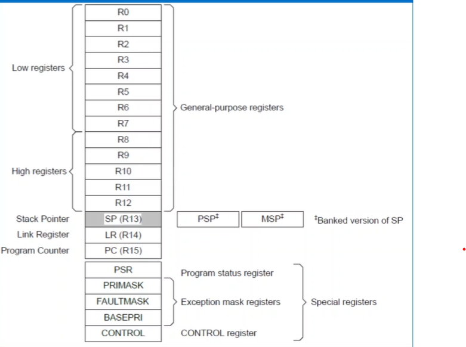

اللهم لا علم لنا الأ ما علمتنا به انك انت علام الغيوب
Introduction to Microcontrollers
ARM Cortex M4 Core Registers
- The core registers are not memory mapped and are accessed by register name
- Low registers
- Registers r0-r7 are accessible by all instructions that specify a general purpose register
- High Registers
- Registers r8-r12 are accessible by all 32-bit instructions that specify a general purpose register
- Registers r8-r12 are not accessible by all 16-bit instructions
- Stack Pointer
- Register r13 is used as the stack ponter(SP)
-
The processor implements two stacks with a pointer for each held in independent
register "Main SP" and "Process SP"
- Link Register
-
Register r14 is the subroutine LinkRegister(LR). The LR recieves the return address from PC
when a Branch and Link
-
The LR is also used for exception return
-
At all other times, you can treat r14 as a general-purpose register
- PRIMASK Register
- prevents activation of all exceptions with programmable priority
- FAULT MASK
- Register prevents activation of all exceptions except for the Non-Maskable Interrupt(NMI)
- Both PRIMASK and FAULTMASK
- This register is only accessible in privileged mode.
- The MSR and MRS instructions are used to access the PRIMASK register, and
- The CPS instruction may be used to change the value of the PRIMASK register
- The Control Register Controls
- The stack used
- the privilege level for software execution when the processor is in Thread mode
- indicates whether the FPU state is active.
- This register is only accessible in privileged mode
How to switch from\to privileged mode?
-
In thread mode, the control register controls whether the software execution is privileged
or unprivileged
-
In Handler mode, software execution is always privileged
-
Only privileged software can write to the control register

Arm Core Registers
Cortex-M bus Interfaces